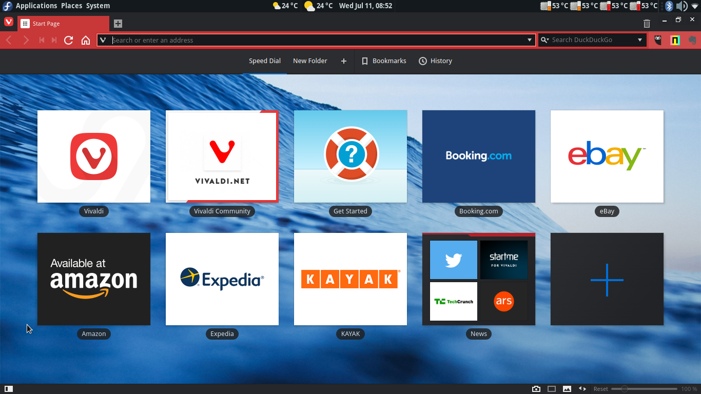
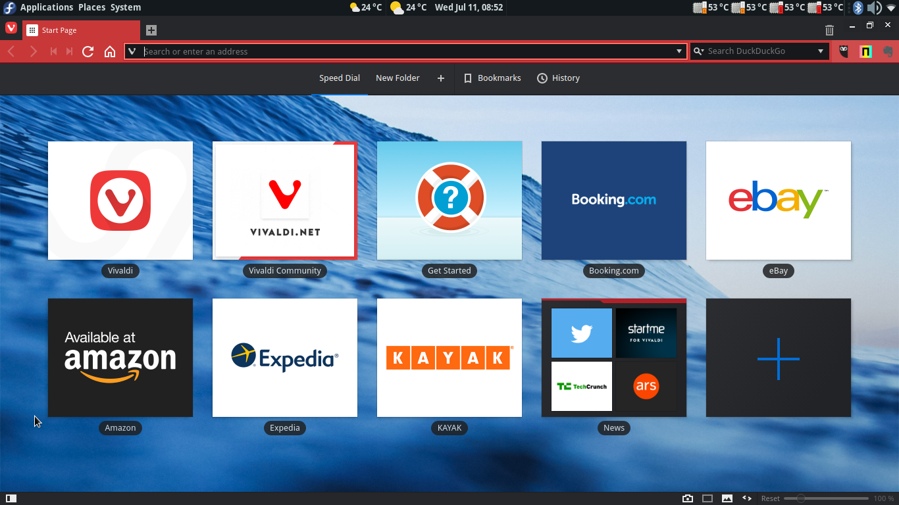

Vivaldi un navegador Web impresionante
Vivaldi es un navegador gratuito desarrollado por la empresa Vivaldi Technologies, cuya compañía fue fundada por el cofundador y ex-CEO de Opera Jon Stephenson von Tetzchner, y Tatsuki Tomita quiénes quedaron bastante descontentos por varias decisiones que tomó la empresa Opera Software hace bastante tiempo como el cierre del portal comunitario My Opera y dejando atrás las opiniones de las personas que ayudaban a su desarrollo y mejora.
¿Qué nos aporta Vivaldi?
Vivaldi es muy poco conocido pero que daría mucho del qué hablar. Tiene una apariencia parecida a Opera y contiene multitud de características y ventajas por doquier.
[owl-carousel items=1 margin=1 loop=true autoplay=true autoplayHoverPause=true nav=true]

 
[/owl-carousel]

[/owl-carousel]
Disponible para varios sistemas operativos
Actualmente dispone de paquete estables x86/x86_64 tanto para sistemas que usen paquetería .deb como .rpm. También hay un paquete considerado inestable enfocado a ARM 32 y solo disponible en formato .deb. Por otro lado soporta Windows y Mac.
Memoria RAM
Vivaldi es capaz de consumir una cuarta parte de lo que consumiría Google Chrome o Firefox a pesar de tener multitud de pestañas abiertas, con lo que podemos navegar de una forma fluida y trabajar con nuestro equipo sin tener que estar prescindiendo de determinados programas, páginas con contenido interactivo...etc
Soporte extensiones de Chrome
Si no puedes vivir sin las extensiones de Google Chrome con Vivaldi podrás tenerlas sin ningún problema y sin tener que instalar complementos o extensiones adicionales. Con tan solo acceder a la página Chrome Store podrás instalar cualquier extensión sin problemas.
Motor de renderizado Blink
Utiliza Blink para interpretar todos los elementos del diseño y el contenido Web a una velocidad de vértigo. Por defecto es el motor de renderizado que utiliza Google Chrome y Opera Software.
Sencillo y potente
Se pueden utilizar gestos para abrir páginas Web, pestañas, cerrarlas y configurar tus propios gestos para que se apliquen determinadas configuraciones, con lo que más de alguna ocasión agradecerás poder cerrar una simple ventana haciendo un dibujo con el ratón, o con el dedo en caso de ser pantalla táctil.
Soporte de captura de pantalla
El navegador incluye un botón con el que capturas la página y te permite seleccionar un determinado área, o la página completa y guardarla en formato .png, .jpg o copiarla directamente al portapapeles. Esto nos evita tener que utilizar herramientas externas cada vez que queramos compartir alguna información interesante o dibujos que no puedan escribirse.
Permite cargar o no animaciones, imágenes...
Con esto nos olvidamos de consumir tanto ancho de banda y espacio en disco ya que al desactivarlo no se ejecutan. Es muy interesante ya que también reduce el costo de CPU y de memoria al no reproducirse.
Acciones de página
Dispone de una lista enorme de efectos que se pueden aplicar a la página como filtros para alterar los colores como blanco y negro, escala de grises, inversión del color, intensificar... También tiene otras características como depurador de CSS, suprimir o forzar efectos de transiciones, utilizar tipografía "Monospace"...
Editor de apariencia
Vivaldi incluye un editor mínimo de colores de la apariencia del navegador, además de poder incorporar un fondo determinado. Pero eso no es todo, ¡también puede editarse a nivel de CSS y personalizarle a tu antojo!
Gestor de notas
Incorpora un pequeño editor de notas para tomar apuntes de cualquier tipo, capturas, archivos adjuntos, e incluso posee un visor de Markdown, que además es de fácil acceso ya que se abre en el panel lateral izquierdo y permite tomar las notas de una forma fácil y rápida.
Speed Dial múltiple
Un pequeño mural que permite ver las últimas páginas visitadas o también existe la posibilidad de añadir páginas como las que tenemos en favoritos. No obstante, se pueden tener varios "Speed dial" para determinadas páginas y ponerles un nombre. Nos evita tener que ir buscando en la típica barra de marcadores página por página.
Barra de pestañas
Se pueden desplazar las barras de pestañas a cualquier lateral del navegador, arriba, abajo, izquierda, derecha. Así podemos aumentar nuestra productividad.
Gestor de tareas
¡Incluye un gestor de tareas! Con el puedes ver cuánto está consumiendo cada página en relación CPU y M.RAM y cerrarlas cuando ¡quieras! Nos olvidamos de aquellas páginas o aplicaciones Web que no paran de consumir y que muchas veces, o al menos en Chrome, se quedan colgadas sin respuesta teniendo que reiniciar la conexión.
Gestor de sesiones
Si estás navegando, y quieres dedicarte a mirar otras Webs pero sin tener que perder las páginas que visitas, entonces, puedes almacenar la sesión y volver abrirla cuando te plazca.
Gestión de historial
No solo podrás ver las páginas que has visitado ordenadas por día, mes y/o año sino que también el ancho de banda que consumiste representado en una gráfica.
Configuración de comandos
También se pueden buscar páginas web o abrir páginas de marcadores utilizando la tecla F2. Este botón accionará una ventana en el centro de la pantalla del navegador esperando a que le introduzcas lo que quieres buscar.
Gestión de opciones via Web
Se pueden modificar las opciones mediante via URL y también visualizar registros, llevar a cabo pruebas y depuraciones con según que cosas:
* vivaldi://settings -> Gestiona la configuración del navegador
* vivaldi://bookmarks -> Gestión de marcadores
* vivaldi://downloads -> Descargas vivaldi://accessibility -> Opciones
de accesibilidad
* vivaldi://net-internals -> Opción muy interesante que engloba todo lo que tiene que ver con la red
* vivaldi://media-internals -> Reproductores de audio y video
* vivaldi://cache -> Lista toda la caché almacenada (URL)
* vivaldi://components -> Componentes adicionales
* vivaldi://appcache-internals -> Caché de aplicaciones Web utilizadas
* vivaldi://indexeddb-internals -> Apps, extensiones... que hacen uso de IndexedDB
* vivaldi://omnibox -> Permite buscar en el historial parámetros que hayan sido utilizados por las URLs tipo name,user...
* vivaldi://user-actions -> Depura las acciones del usuario nada más empezar, cambiar de pestaña, abirir ventanas...etc
* vivaldi://password-manager-internals -> En teoría son logs de contraseñas almacenadas
* vivaldi://quota-internals -> Datos utilizados
* vivaldi://webrtc-internals -> Depuración de uso del protocolo WebRTC
* vivaldi://terms -> Licencia
* vivaldi://sandbox -> Estado de caja de arena (aislar un contenido Web)
* vivaldi://device-log -> Registro de eventos con dispositivos ¡USB, Bluetooth...!
* vivaldi://flags -> Opciones experimentales o en fase beta
* vivaldi://about -> Información acerca del navegador
* vivaldi://blob-internals -> Información sobre blobs
Comunidad
Vivaldi tiene una comunidad viva y grandísima con muchos posts publicados cada día, el inglés es el idioma por defecto, pero hay subforos con otros idiomas como el nuestro.
Cuenta de correo electrónico gratuito
Si te haces usuari@ de Vivaldi, automáticamente posees un correo electrónico gratuito sin publicidad. Utilizan la plataforma RoundCube para webmail sin ningún tipo de publicidad añadida.
Soporte idiomático
Vivaldi actualmente soportada un total de hasta 40 idiomas como el Ruso, Español, Inglés, Persa, Francés, Chino...
Descargar
Los siguientes enlaces nos permitirán descargar Vivaldi para nuestro sistema y arquitectura de CPU.
Linux
64 bits * Vivaldi 1.15 - .DEB * Vivaldi 1.15 - .RPM
32 bits * Vivaldi 1.15 - .DEB * Vivaldi 1.15 - .RPM
ARM 32 bits * Vivaldi 1.15 - .DEB
Windows
Versión 7+ 32 bits * Vivaldi 1.15 - .EXE
Versión 7+ 64 bits * Vivaldi 1.15 - .EXE ¡Yo ya he optado por Vivaldi! ¿Y tú?
Versión Vista/XP (no está más soportado) 32 bits * Vivaldi 1.0 - .EXE
Mac OS X
Versión para sistemas superiores 10.9+ * Vivaldi 1.15 - .DMG
¡Yo ya he optado por Vivaldi! ¿Y tú?